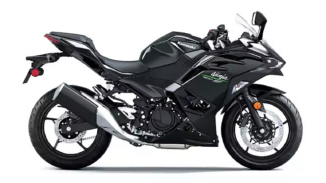
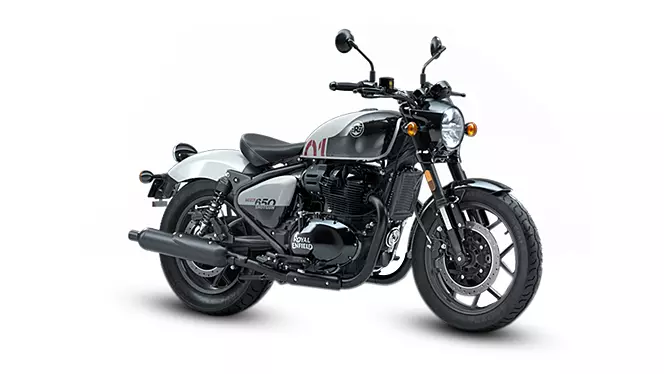
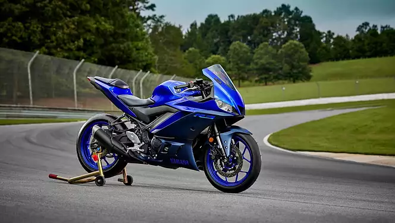

Welcome to my motorcycle blog ! This is Sreenivas Athi a techinical support enginner who loves to ride new bikes.Exploring the Open Road on Two Wheels" - Welcome to our motorcycle blog, where we embark on thrilling adventures, share riding tips, review the latest gear, and celebrate the freedom of the open road. Join us as we delve into the vibrant world of motorcycles, from classic cruisers to cutting-edge sport bikes, and everything in between.
Blog-1
Kawasaki Ninja 500
Kawasaki Ninja 500 is a bike available in only 1 variant and 1 colour. The Kawasaki Ninja 500 is powered by 451cc BS6 engine which develops a power of 44.7 bhp and a torque of 42.6 Nm.

The Kawasaki Ninja 500 is the Japanese manufacturer’s latest supersport motorcycle. It sits above the Ninja 300 and the Ninja 400 and is priced exactly as much as the latter. It is available in one variant and one colour only.
In terms of design, the Ninja 500 bears the new Kawasaki family look of its supersport motorcycles. Thus, it gets a sharp face with twin LED headlights, layered style fairing that sits cleanly with the fuel tank, and a raised tail section. It looks, in many respects, like a scaled-down Kawasaki Ninja ZX-6R.
Kawasaki has offered a decent set of features with the Ninja 500. You’ve got all-LED lights, dual-channel ABS, and an LCD display with Bluetooth connectivity.
The Ninja 500 is yet another fully-faired motorcycle from Kawasaki. It sits between the Ninja 400 and the Ninja 650 in the Indian market and is known for offering good performance, balance ride and also great styling. But just like other Kawasakis, the Ninja 500 is also quite expensive to maintain.
Blog-2
Royal Enfield Shotgun 650
The Royal Enfield Shotgun 650 is a factory custom motorcycle that takes inspiration from the rich and varied community of custom motorcycle builders. The three variants that the Shotgun 650 is available in are - Custom Shed, Custom Pro, and Custom Special.

The Royal Enfield Shotgun 650 is a factory custom motorcycle that takes inspiration from the rich and varied community of custom motorcycle builders. The three variants that the Shotgun 650 is available in are - Custom Shed, Custom Pro, and Custom Special.
The design of the Shotgun 650 is attractive with the fuel tank, side panels, and fenders, along with the low-slung stance of the bike adding to its visual appeal.
While the bike doesn’t have any direct competition, since there is no Bobber-style bike at this price point, the other 650cc option that you can look at is the Royal Enfield Super Meteor 650.
Royal Enfield Shotgun 650 is a cruiser bike available in 3 variants and 4 colours. The Royal Enfield Shotgun 650 is powered by 648cc BS6 engine which develops a power of 46.39 bhp and a torque of 52.3 Nm. With both front and rear disc brakes, Royal Enfield Shotgun 650 comes up with anti-locking braking system. This Shotgun 650 bike weighs 240 kg and has a fuel tank capacity of 13.8 liters.
Blog-3
Yamaha YZF-R3
Yamaha YZF-R3 is a sports bike available in only 1 variant and 2 colours. The Yamaha YZF-R3 is powered by 321cc BS6 engine which develops a power of 41.4 bhp and a torque of 29.5 Nm. With both front and rear disc brakes, Yamaha YZF-R3 comes up with anti-locking braking system.

The 2023 YZF-R3 has gone sharper and more aerodynamic. It might not be as aggressive as its bigger siblings and is closer in styling to the older-gen R1. The motorcycle comes with a full fairing with split headlamps and an air intake. Then there is the split seat setup with a short tail section.
As for features, the R3 comes with a dual-channel ABS, an LCD instrument cluster and LED lighting for the headlamp and tail lamp. Moreover, it is also equipped with upside-down forks with golden fork bottles. But when compared to its rivals, the KTM RC 390 and Ninja 400, the R3 only has decent equipment.
The YZF-R3 is expected to be around Rs 4 lakh and will go against the Kawasaki Ninja 400. Regarding launch time, expect it to be launched around the festive season.
the Yamaha R3’s engine hasn’t changed much since 2019. It has a 321cc, parallel-twin, liquid-cooled engine that is good for 40.4bhp and 29.4Nm. As for hardware, the motorcycle comes with upside-down forks up front, a mono-shock and discs at both ends with ABS.